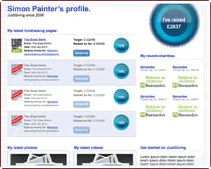
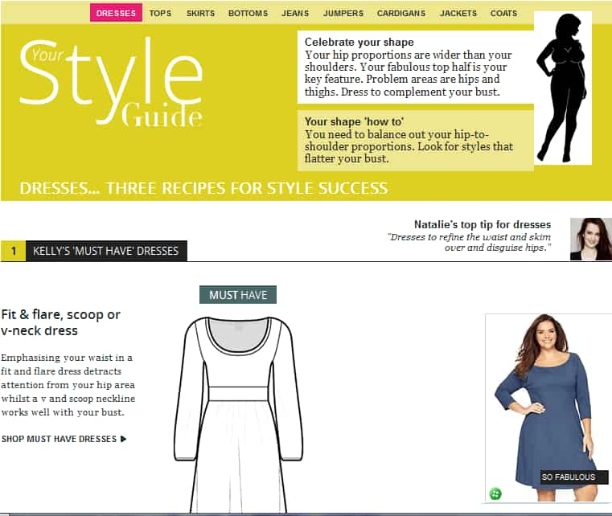
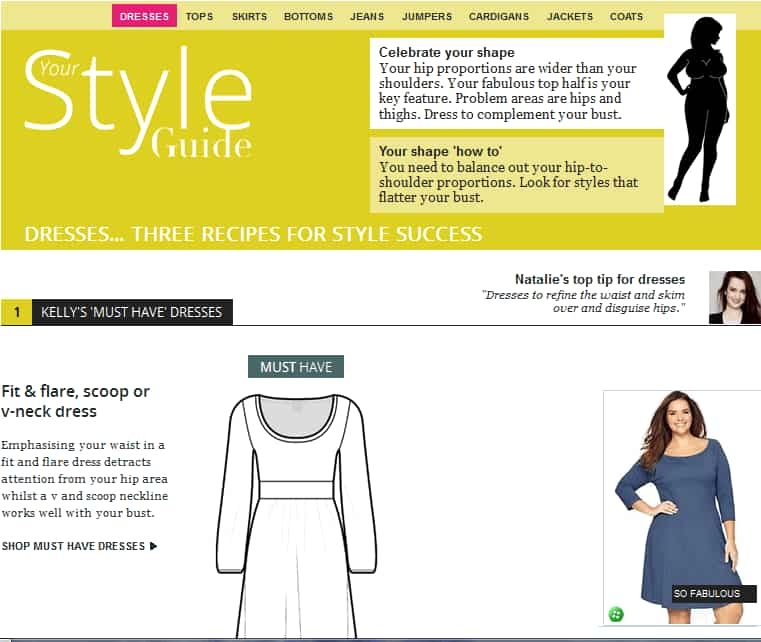
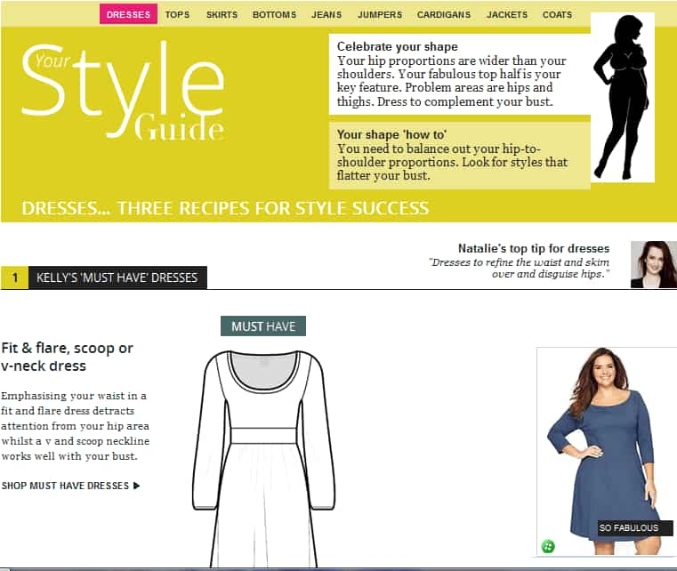
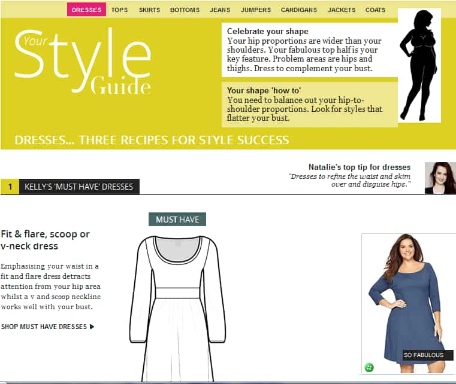

latest happening: reading books 📕, watching films–TV 📺, more…
(🤖 ¡stylesheets running …!)
email: "kaivong[at]hey{dot}com"
Portfolio:

 




latest happening: reading books 📕, watching films–TV 📺, more…
(🤖 ¡stylesheets running …!)
email: "kaivong[at]hey{dot}com"

(🎭 ¿can haz javascript?)
alternate looks: